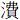

周武王
名發。初，高辛氏之世妃曰姜嫄，助祭郊禖，見大人跡，履之，當時歆如有人道感己，遂有身而生男。以為不祥，棄之阨巷，羊牛避而不踐；又送之山林之中，會伐林者；又取而置寒冰上，大鳥以一翼籍覆之。姜嫄以為異，乃收養焉，名之曰棄。枝頤有異相。長為堯稷官，有功於民。后稷之孫曰公劉，有德，諸侯皆以天子之禮待之。初，黃帝之世讖言曰：「西伯為王，期在甲子，昌制命，發行誅，旦行道。」及公劉之後，十三世而生季歷。季歷之十年，飛龍盈於殷之牧野，此蓋聖人在下位將起之符也。
季歷之妃曰大任，夢長人感己，溲於豕牢而生昌，是為周文王。龍顏虎肩，身長十尺，胸有四乳。太王曰：「吾世當有興者，其在昌乎！」季歷之兄曰太伯，知天命在昌，適越，終身不反，弟仲雍從之，故季歷為嗣以及昌。昌為西伯，作邑于豐。
文王之妃曰太姒，夢商庭生棘，太子發植梓樹于闕間，化為松栢棫柞。以告文王，文王幣率羣臣，與發竝拜吉夢。季秋之甲子，赤爵銜書及豐，置于昌戶。昌拜稽首受，其文要曰：「姬昌蒼帝子，亡殷者紂王。」將畋，史編卜之曰：「將大獲，非熊非羆，天遺汝師以佐昌。臣太祖史疇為禹卜畋，得臯陶，其兆類此。」至於磻溪之水，呂尚釣於涯，王下趨拜曰：「望公七年，乃今見光景於斯。」尚立變名答曰：「望釣得玉璜，其文要曰：『姬受命，昌來提，撰爾洛鈐報在齊。』」尚出游，見赤人自洛出，授尚書：「命曰呂，佐昌者子。」
文王夢日月著其身，又鸑鷟鳴於岐山。孟春六旬，五緯聚房。後有鳳凰銜書，游文王之都。書文曰：「殷帝無道，虐亂天下。皇命已移，不得復久。靈祇遠離，百神吹去。五星聚房，昭理四海。」
文王既沒，太子發代立，是為武王。武王駢齒望羊。將伐紂，至於孟津，八百諸侯，不期而會，咸曰：「紂可伐矣。」武王不從。及紂殺比干，囚箕子，微子去之，乃伐紂。渡孟津，中流，白魚躍入王舟。王俯取魚，長三尺，目下有赤文成字，言紂可伐。王寫以世字，魚文消。燔魚以告天。有火自天止于王屋，流為赤烏，烏銜穀焉。穀者，紀后稷之德；火者，燔魚以告天，天火流下，應以吉也。遂東伐紂，勝於牧野，兵不血刃，而天下歸之。乃封呂尚於齊。周德既隆，草木茂盛，蒿堪為宮室，因名蒿室。既有天下，遂都於鎬。
十二年辛卯，王率西夷諸侯伐殷，敗之于坶野，王親禽受於南單之臺，遂分天之明。立受子祿父，是為武庚。夏四月，王歸于豐，饗于太廟。命監殷，遂狩于管。作大武樂。
十三年，巢伯來賓。薦殷于太廟。遂大封諸侯。秋，大有年。
十四年，王有疾，周文公禱於壇墠，作金縢。
十五年，肅慎氏來賓。初狩方岳，誥于沬邑。冬，遷九鼎于洛。
十六年，箕子來朝。秋，王師滅蒲姑。
十七年，命王世子誦于東宮。冬十有二月，王陟，年五十四。
成王
名誦。
元年丁酉春正月，王即位，命冢宰周文公總百官。庚午，周公誥諸侯于皇門。夏六月，葬武王于畢。秋，王加元服。武庚以殷叛。周文公出居于東。
二年，奄人、徐人及淮夷入于邶以叛。秋，大雷電以風，王逆周文公于郊，遂伐殷。
三年，王師滅殷，殺武庚祿父，遷殷民于衞。遂伐奄，滅蒲始。
四年春正月，初朝于廟。夏四月，初嘗麥。王師伐淮夷，遂入奄。
五年春正月，王在奄，遷其君于蒲姑。夏五月，王至自奄，遷殷民于洛邑，遂營成周。
六年，大蒐于岐陽。
七年，周公復政于王。春二月，王如豐。三月，召康公如洛度邑。甲子，周文公誥多士于成周，遂城東都。王如東都，諸侯來朝。冬，王歸自東都。立高圉廟。
八年春正月，王初蒞阼親政。命魯侯禽父、齊侯伋遷庶殷于魯。作象舞。冬十月，王師滅唐，遷其民于杜。
九年春正月，有事于太廟，初用勺。肅慎氏來朝，王使榮伯錫肅慎氏命。
十年，王命唐叔虞為侯。越裳氏來朝。周文公出居于豐。
十一年春正月，王如豐。唐叔獻嘉禾，王命唐叔歸禾于周文公。王命周平公治東都。
約按：周平公即君陳，周公之子，伯禽之弟。
十二年，王師、燕師城韓，王錫韓侯命。
十三年，王師會齊侯、魯侯伐戎。夏六月，魯大禘于周公廟。
十四年，秦師圍曲城，克之。冬，洛邑告成。
十八年春正月，王如洛邑定鼎。鳳凰見，遂有事于河。
武王沒，成王少，周公旦攝政七年。制禮作樂，神鳥鳳凰見，蓂莢生，乃與成王觀于河、洛，沈璧。禮畢，王退俟。至于日昃，榮光竝出幕河，青雲浮至，青龍臨壇，銜玄甲之圖，坐之而去。禮於洛，亦如之。玄龜青龍蒼光止於壇，背甲刻書，赤文成字，周公援筆以世文寫之。書成文銷，龜隨甲而去。其言自周公訖于秦、漢盛衰之符。麒麟游苑，鳳凰翔庭，成王援琴而歌曰：「鳳凰翔兮於紫庭，余何德兮以感靈，賴先王兮恩澤臻，于胥樂兮民以寧。」
十九年，王巡狩侯、甸、方岳，召康公從，歸于宗周，遂正百官，黜豐侯。
二十一年，除治象。周文公薨于豐。
二十二年，葬周文公于畢。
二十四年，於越來賓。
二十五年，王大會諸侯于東都，四夷來賓。冬十月，歸自東都，大事于太廟。
三十年，離戎來賓。
約按：離戎，驪山之戎也，為林氏所伐，告于成王。
三十三年，王遊于卷阿，召康公從，歸于宗周。命世子釗如房逆女，房伯祈歸于宗周。
三十四年，雨金于咸陽。
約按：咸陽天雨金，三年，國有大喪。
三十七年夏四月乙丑，王陟。
康王
名釗。
元年甲戌春正月，王即位，命冡宰召康公總百官。諸侯朝于豐宮。
三年，定樂歌，吉禘于先王，申戒農官，告于廟。
六年，齊太公薨。
九年，唐遷于晉，作宮而美，王使人讓之。
十二年夏六月壬申，王如豐，錫畢公命。秋，毛懿公薨。
十六年，錫齊侯伋命。王南巡狩，至九江廬山。
十九年，魯侯禽父薨。
二十一年，魯築茅闕門。
二十四年，召康公薨。
二十六年秋九月己未，王陟。
昭王
名瑕。
元年庚子春正月，王即位，復設象魏。
六年，王錫郇伯命。冬十二月，桃李華。
十四年夏四月，恆星不見。秋七月，魯人弒其君宰。
十六年，伐楚，涉漢，遇大兕。
十九年春，有星孛于紫微。祭公、辛伯從王伐楚，天大曀，雉兔皆震，喪六師于漢。王陟。
穆王
名滿。
元年己未春正月，王即位，作昭宮，命辛伯餘靡。冬十月，築祇宮于南鄭。
自武王至穆王享國百年。穆王以下都于西鄭。
六年春，徐子誕來朝，錫命為伯。
八年春，北唐來賓，獻一驪馬，是生騄耳。
九年，築春宮。
十一年，王命卿士祭公謀父。
十二年，毛公班、共公利、逢公固帥師從王伐犬戎。冬十月，王北巡狩，遂征犬戎。
十三年春，祭公帥師從王西征，次于陽紆。秋七月，西戎來賓。徐戎侵洛。冬十月，造父御王，入于宗周。
十四年，王帥楚子伐徐戎，克之。夏四月，王畋于軍丘。五月，作范宮。秋九月，翟人侵畢。冬，蒐于萍澤。作虎牢。
十五年春正月，留昆氏來賓。作重璧臺。冬，王觀于鹽澤。
十六年，霍侯舊薨。王命造父封于趙。
十七年，王西征昆侖丘，見西王母。其年，西王母來朝，賓于昭宮。秋八月，遷戎于太原。
王北征，行流沙千里，積羽千里。征犬戎，取其五王以東。西征于青鳥所解。西征還履天下，億有九萬里。
十八年春正月，王居祇宮，諸侯來朝。
二十一年，祭文公薨。
二十四年，王命左史戎夫作記。
三十五年，荊人入徐，毛伯遷帥師敗荊人于泲。
三十七年，大起九師，東至于九江，架黿鼉以為梁。遂伐越，至于紆。荆人來貢。
三十九年，王會諸侯于塗山。
四十五年，魯侯

薨。五十一年，作呂刑，命甫侯于豐。
五十五年，王陟于祇宮。
共王
名繄。
元年甲寅春正月，王即位。
四年，王師滅密。
九年春正月丁亥，正使內史良錫毛伯遷命。
十二年，王陟。
懿王
名堅。
元年丙寅春正月，王即位。天再旦于鄭。
七年，西戎侵鎬。
十三年，翟人侵岐。
十五年，王自宗周遷于槐里。
十七年，魯厲公擢薨。
二十一年，虢公帥師北伐犬戎，敗逋。
二十五年，王陟。
懿王之世，興居無節，號令不時，挈壺氏不能共其職，諸侯於是攜德。
孝王
名辟方。
元年辛卯春正月，王即位，命申侯伐西戎。
五年，西戎來獻馬。
七年冬，大雨電，江、漢冰。
八年，初牧于汧、渭。
九年，王陟。
夷王
名燮。
元年庚子春正月，王即位。
二年，蜀人、呂人來獻瓊玉，賓于河，用介珪。
三年，王致諸侯，烹齊哀公于鼎。
六年，王獵于社林，獲犀牛一以歸。
七年，虢公帥師伐太原之戎，至于俞泉，獲馬千匹。冬，雨雹，大如礪。楚子熊渠伐庸，至于鄂。
八年，王有疾，諸侯祈于山川。王陟。
厲王
名胡。
元年戊申春正月，王即位，作夷宮，命卿士榮夷公落。楚人來獻龜貝。
三年，淮夷侵洛，王命虢公長父伐之，不克。齊獻公山薨。
六年，楚子延卒。
八年，初監謗。芮伯良夫戒百官于朝。
十一年，西戎入于犬丘。
十二年，王亡奔彘。國人圍王宮，執召穆公之子殺之。
十三年，王在彘，共伯和攝行天子事。
十四年，玁狁侵宗周西鄙。召穆公帥師追荆蠻，至于洛。
十六年，蔡武侯薨。楚子勇卒。
十九年，曹夷伯薨。
二十二年，大旱。陳幽公薨。
二十三年，大旱。宋僖公薨。
二十四年，大旱。杞武公薨。
二十五年，大旱。楚子嚴卒。
二十六年，大旱，王陟于彘。周定公、召穆公立太子靖為王。共伯和歸其國，遂大雨。
大旱既久，廬舍俱焚，會汾王崩，卜于大陽，兆曰厲王為祟。周公、召公乃立太子靖，共和遂歸國。和有至德，尊之不喜，廢之不怒，逍遙得志于共山之首。
宣王
名靖。
元年甲戌春正月，王即位，周定公、召穆公輔政。復田賦。作戎車。燕惠侯薨。
二年，錫太師皇父、司馬休父命。魯慎公薨。曹公子蘇弒其君幽伯疆。
三年，王命大夫仲伐西戎。齊武公壽薨。
四年，王命蹶父如韓，韓侯來朝。
五年夏六月，尹吉甫帥師伐玁狁，至于太原。秋八月，方叔帥師伐荆蠻。
六年，召穆公帥師伐淮夷。王帥師伐徐戎，皇父、休父從王伐徐戎，次于淮。王歸自伐徐。錫召穆公命。西戎殺秦仲。楚子霜卒。
七年，王錫申伯命。王命樊侯仲山甫城齊。
八年，初考室。魯武公來朝，錫魯世子戲命。
九年，王會諸侯于東都，遂狩于甫。
十二年，魯武公薨。齊人弒其君厲公無忌，立公子赤。
十五年，衞釐侯薨。王錫虢文公命。
十六年，晉遷于絳。
十八年，蔡夷侯薨。
二十一年，魯公子伯御弒其君懿公戲。
二十二年，王錫王子多父命居洛。
二十四年，齊文公赤薨。
二十五年，大旱，王禱于郊廟，遂雨。
二十七年，宋惠公覸薨。
二十八年，楚子狥卒。
二十九年，初不籍千畝。
三十年，有兔舞于鎬京。
三十二年，王師伐魯，殺伯御。命孝公稱于夷宮。陳僖公孝薨。有馬化為人。
三十三年，齊成公薨。王師伐太原之戎，不克。
三十七年，有馬化為狐。燕僖侯卒。楚子鄂卒。
三十八年，王師及晉穆侯伐條戎、奔戎，王師敗逋。
三十九年，王師伐姜戎，戰于千畝，王師敗逋。
四十年，料民于太原，戎人滅姜邑。晉人敗北戎于汾隰。
四十一年，王師敗于申。
四十三年，王殺大夫杜伯，其子隰叔出奔晉。晉穆侯費生薨，弟殤叔自立，世子仇出奔。
四十四年。晉殤叔元年丁巳。
四十六年，王陟。
幽王
名涅。
元年庚申春正月，王即位。晉世子仇復歸于晉，殺殤叔，晉人立仇，是為文侯。王錫太師尹氏、皇父命。
二年。辛酉，晉文侯元年。涇、渭、洛竭，岐山崩。初增賦。晉文侯同王子多父伐鄶，克之。乃居鄭父之丘，是為鄭桓公。
三年，王嬖褒姒。冬，大震電。
四年，秦人伐西戎。夏六月，隕霜。陳夷公薨。
五年，王子宜臼出奔申。皇父作都于向。
六年，王命伯士帥師伐六濟之戎，王師敗逋。西戎滅蓋。冬十月辛卯朔，日有食之。
七年，虢人滅焦。
八年，王錫司徒鄭伯多父命。王立褒姒之子曰伯服，為太子。
九年，申侯聘西戎及鄫。
十年春，王及諸侯盟于太室。秋九月，桃杏實。王師伐申。
十一年春正月，日暈。申人、鄫人及犬戎入宗周，弒王及鄭桓公。犬戎殺王子伯服，執褒姒以歸。申侯、魯侯、許男、鄭子立宜臼于申，虢公翰立王子余臣于攜。
武王滅殷，歲在庚寅。二十四年，歲在甲寅，定鼎洛邑，至幽王二百五十七年，共二百八十一年。自武王元年己卯至幽王庚午，二百九十二年。
本章完!